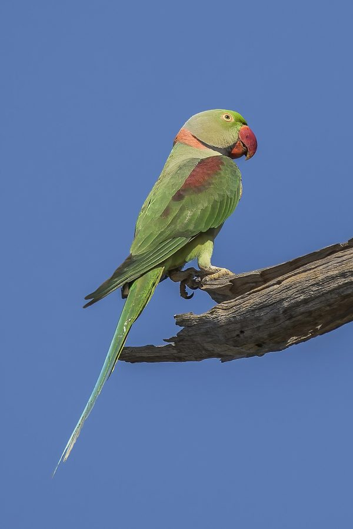

हीरामन तोताAlexandrine Parakeet
Psittacula eupatria · Psittacidae · BRD-0174

- Scientific name वैज्ञानिक नाम
- Psittacula eupatria (Linnaeus, 1766)
- Family कुल
- Psittacidae
- Hindi हिंदी
- हीरामन तोता
- Local names स्थानीय नाम
- hiraman tota, heeraman tota, alexandrine parakeet, tota
- Status here यहाँ की स्थिति
- native
- Movement आवागमन
- Resident, here all year
- Known from कहाँ दर्ज
- Others have published records from the Basti–Ayodhya districts बस्ती–अयोध्या के ज़िलों से दूसरों के प्रकाशित अभिलेख
- IUCN IUCN
- NT
- Review समीक्षा
- audited and independently read
When to look कब देखें
Present all year. साल भर मौजूद।
Tell it apart from इनसे अलग पहचानें
हीरामन तोता / Alexandrine Parakeet
Psittacula eupatria (Linnaeus, 1766) — Psittacidae
हीरामन तोता — पूर्वी उत्तर प्रदेश के जंगलों और गाँवों में पाया जाने वाला भारत का सबसे बड़ा पैराकीट (छोटी तोता), जिसकी लंबाई 50 सेंटीमीटर तक होती है। इसका नाम "हीरामन" (ruby-throated) इसलिए है क्योंकि नर पक्षी के गले पर गहरे गुलाबी-लाल रंग की पट्टी होती है। यह तोता फल खाता है, बीजों को दूर-दूर तक ले जाता है, और जंगलों में बीज फैलाने में महत्वपूर्ण भूमिका निभाता है। इसकी तीखी, कर्कश आवाज "क्रीक-क्रीक-क्रीक" दूर से सुनी जा सकती है।
Quick Identification त्वरित पहचान
| Feature | Description |
|---|---|
| Size | Largest parakeet in region; 48–52 cm long |
| Plumage | Overall green; pale blue-green crown and tail |
| Male characteristic | Deep red-maroon throat patch and upper breast |
| Female | Lacks the red throat patch; duller crown |
| Bill | Pale yellow-orange; hooked |
| Tail | Long, bluish-green, with red undertail coverts |
| Call | Loud, harsh kriek-kriek-kriek |
Field tip: The largest parakeet in eastern UP, with a long pointed tail. Males show a distinctive maroon-red patch on the throat and upper breast. Females are plain green. Noisy flocks in flight are unmistakable.
हिंदी — कैसे पहचानें:
भारत का सबसे बड़ा तोता — बहुत लंबी पूंछ वाला।
नर के गले पर गहरी गुलाबी-लाल पट्टी।
मादा हरी होती है, बिना लाल पट्टी के।
बहुत तेज़, कर्कश आवाज़।
Morphology आकारिकी
Biometrics:
| Measurement | Range |
|---|---|
| Total length | 480–520 mm |
| Wing (folded) | 225–250 mm |
| Tail | 250–280 mm |
| Bill | 24–28 mm |
| Weight | 200–250 g |
Size: 48–52 cm long; among the largest of the Psittacula parakeets in India.
Plumage: Predominantly green with blue-green on head and upper back. Tail blue-green with red undertail coverts. Wing coverts bright green.
Plumage (male): Distinctive deep maroon or wine-red patch on throat, upper breast, and extend onto flanks. Crown blue-green. A pale yellow-green loral patch (between eye and bill). A dark red patch on wings (alula and primary coverts).
Plumage (female): No red on throat or breast; duller overall. Crown greenish-blue rather than striking. Underparts pale green.
Bill: Pale yellow-orange, robust and hooked, adapted for cracking hard nuts and seeds.
Legs and feet: Grey; strong.
Eyes: Yellow-orange iris with black pupil; perceptive and alert.
Sexes: Highly dimorphic; the red throat patch of males is diagnostic.
Juveniles: Similar to females; red appears gradually with age in males.
Vocalisations. Call repertoire:
- Contact call: Loud, harsh and metallic kriek-kriek-kriek or kra-kra-kra, repeated singly or in bursts.
- Flight call: Sharper, more rapid ki-ki-ki-ki in flight.
- Feeding calls: Quieter, conversational notes while foraging in flocks.
हिंदी: नर की तेज़ "क्रीक-क्रीक-क्रीक" आवाज़। मादा कम तेज़ आवाज़ करती है। झुंड में उड़ते समय शोर मचाता है।
Behaviour & Ecology व्यवहार और पारिस्थितिकी
Gregarious frugivore: Alexandrine Parakeets are highly social, typically seen in pairs or small flocks. They forage in fruit-bearing trees, consuming:
- Figs and date palms
- Mahua fruits
- Mangoes and guavas
- Nuts and seeds of large trees
- Grain and crop seeds
Feeding: Forage in canopy and mid-story; hang acrobatically to reach fruits. Feed in early morning and late afternoon; rest during midday heat.
Nesting: Cavity nesters; breed in hollows of large trees, particularly sal, mango, and banyan.
Movement: Largely sedentary residents; local movements in response to fruiting seasons.
Roosting: Communal roosts in tall trees, particularly in winter months.
Vocal and active: Constant calling in flight and when perched. Very alert and swift in flight.
हिंदी: झुंड में रहता है। फल खाता है — अंजीर, पपीता, आम। पेड़ों की खोखली जगह में घोंसला बनाता है। बहुत तेज़ आवाज़ करता है।
Life Cycle / Phenology जीवन चक्र
Year-round resident: Breeds within the region; no seasonal migration.
Breeding: March–July; peaks May–June in Uttar Pradesh. Nests in natural tree cavities or abandoned woodpecker holes.
Clutch: 2–4 eggs; incubation 24–26 days.
Fledging: Young leave nest at 40–45 days. Single brood per year.
Fruit availability: Peaks in summer (April–June) and autumn (August–October); influences local movements.
Roosting: Congregate at traditional roost trees at dusk.
हिंदी: साल भर रहता है। मई-जून में घोंसले में अंडे देता है। 40 दिन बाद बच्चे उड़ जाते हैं। फलों की मौसम के अनुसार घूमता है।
Host Plants or Prey आहार
| Food Type | Examples | Feeding Behaviour |
|---|---|---|
| Fruits and berries | Fig, date palm, mahua, mango | Feed in fruiting trees; hang acrobatically |
| Nuts and seeds | Palm nuts, sal seeds | Crack hard seed coat with powerful bill |
| Grain crops | Rice, wheat, millet | Glean on ground or standing crops |
| Young leaves and shoots | Green growth in spring | Forage in canopy; nibble growing tips |
हिंदी: फल खाता है — अंजीर, पपीता, मैदा (mahua)। कठोर बीजों को तोड़ता है। फसलों में नुकसान कर सकता है। युवा पत्तियाँ भी खाता है।
Predators / Natural Enemies शत्रु
- Avian predators: Large eagles (Crested Serpent Eagle, Steppe Eagle), hawk eagles
- Mammalian predators: Jungle cat, wild boar may raid nests; cats in villages
- At nest: Snakes, squirrels, pied crows
- Parasites: Avian parasites and intestinal worms
हिंदी: बड़ी चील इसका शिकार करती हैं। साँप और कौवे इसके अंडे खाते हैं। गाँवों में घरेलू बिल्लियाँ खतरा हो सकती हैं।
Agricultural / Human Relevance कृषि प्रासंगिकता
Crop damage: Flocks may feed on ripening grain crops, particularly wheat, rice, and maize. Damage is localised and sporadic, dependent on abundance of wild fruits.
Nesting availability: Depends on retention of large, old trees with natural cavities. Removal of such trees limits breeding populations.
Cultural relevance: Hunted historically for trade, though hunting is now prohibited. Remains highly valued in traditional cage-bird trade in some regions, despite legal protection.
Seed dispersal: Plays a role in dispersing seeds of large-fruiting trees, particularly figs and palms.
हिंदी: यह पक्षी वन्यजीव अधिनियम 1972 की अंतर्गत संरक्षित है। इसका शिकार और पकड़ना कानूनी रूप से निषिद्ध है। फसलों को नुकसान पहुँचा सकता है, पर बड़े पेड़ों से फल और बीज खाता है, जो जंगल के लिए महत्वपूर्ण है।
Expected Locally स्थानीय रूप से अपेक्षित
Not a field record. Written from published accounts for eastern Uttar Pradesh. No confirmed local sighting yet — if you have seen it, that is what the atlas needs.
अभी तक स्थानीय पुष्टि नहीं। यह विवरण प्रकाशित स्रोतों से है, किसी अवलोकन से नहीं।
This species is NOT a field record. The distribution below is based on published sources describing where the Alexandrine Parakeet should be looked for in eastern Uttar Pradesh.
Range: Expected in open woodlands, sal forests, and rural gardens throughout Basti, Ayodhya, and adjoining districts. More common in areas with large fruiting trees.
Habitat preference: Tall trees with natural cavities (sal, mango, banyan, peepal) for nesting; areas with year-round fruit availability.
Seasonality: Resident year-round. Local movements follow fruiting phenology; flocks gather where fruits are abundant.
Published records: GBIF holds published occurrence records from the Gangetic floodplain districts of Uttar Pradesh.
What a first record would be: A dated photograph clearly showing the species (particularly a male with the distinctive maroon throat patch) in a specified location with GPS coordinates and date, submitted through the About page.
हिंदी: यह पक्षी स्थानीय रूप से अपेक्षित है। जहाँ बड़े पुरानी पेड़ें हैं, वहाँ यह रहता है। साल भर देखा जा सकता है। घोंसले के लिए खोखले पेड़ों की ज़रूरत होती है।
Distribution वितरण
Global range: Indian subcontinent from foothills of Himalayas through central and southern India to Sri Lanka. Subspecies P. e. nipalensis occurs in northern India.
In India: Distributed across much of the peninsula as a resident; more common in peninsular India and foothills.
In Uttar Pradesh: Resident in northern and eastern districts with suitable wooded habitat; particularly in sal forests and wooded villages.
In Basti district / eastern UP: Patchily distributed in areas with large fruiting trees and sal forest remnants. Regular visitor to wooded villages and rural orchards.
Research Questions शोध प्रश्न
- How does the presence of large cavity-bearing trees influence local Alexandrine Parakeet population densities in eastern UP?
- What is the overlap in diet between Alexandrine Parakeets and Rose-ringed Parakeets where both species occur, and does competition affect local distributions?
- Do parakeet flocks follow predictable fruiting phenology routes seasonally, or do they remain within small home ranges?
- क्या आधुनिक कृषि (single-crop, pesticide use) ने इस तोते के भोजन की उपलब्धता को बदल दिया है?
- What are the current nesting sites (trees and cavities) used by Alexandrine Parakeets in Basti district, and what would protect them?
- How do village land-use changes (tree removal, orchard conversion) affect breeding success and local persistence?
Similar Species मिलती-जुलती प्रजातियाँ
| Species | Key Difference | Hindi | Field Rule | |
|---|---|---|---|---|
| [[rose_ringed_parakeet\ | Rose-ringed Parakeet]] (Psittacula krameri) | Much smaller (40–43 cm); red and black neck ring on male | हरा तोता | Alexandrine is much larger; male Alexandrine shows maroon breast, not just a neck ring. |
| [[plum_headed_parakeet\ | Plum-headed Parakeet]] (Psittacula cyanocephala) | Smaller (33 cm); plum-coloured head in male; pale blue tail | टुइयाँ तोता | Alexandrine is much larger with blue-green crown and very long tail. |
| {{Slaty-headed Parakeet}} (Psittacula himalayana) | Similar size but slate-grey head; occurs in foothills only | \ | Slate-headed does not occur in eastern UP lowlands. |
Field rule: Alexandrine Parakeet is the largest parakeet in the region. Males show a distinctive deep maroon (wine-red) patch on throat and breast. The long pointed tail and large size are unmistakable.
Taxonomy & Classification वर्गीकरण
Original description. Described by Carl Linnaeus in 1766 in Systema Naturae (12th edition), page 149, as Psittacus eupatria. Type locality is northern India.
Subspecies. Several subspecies recognised across the range:
- P. e. eupatria Linnaeus, 1766 — southern and central India
- P. e. nipalensis Hodgson, 1829 — northern India, Himalayas (occurs in UP)
- P. e. avensis Oberholser, 1912 — Sri Lanka
Populations in Uttar Pradesh belong to P. e. nipalensis.
Family and order placement. Order Psittaciformes; family Psittacidae (true parakeets and parrots). The genus Psittacula contains the small to medium-sized parakeets of the Indian subcontinent and Southeast Asia.
Phylogenetic notes. Closely related to other Psittacula species, particularly the Rose-ringed Parakeet with which it shares habitat. Molecular studies suggest the genus diverged from other parakeets in the Late Miocene.
IUCN status rationale. Assessed as Near Threatened (NT) globally due to habitat loss and trapping for the cage-bird trade, though populations remain relatively widespread. In India, populations face pressure from tree removal and agricultural intensification. Protected under the Wildlife (Protection) Act 1972.
हिंदी: यह तोता पूरे भारत में मिलता है। अब के बड़े पेड़ों में घोंसला बनाता है। इसे पकड़ना और बेचना कानूनी रूप से निषिद्ध है।
Photo Gallery फोटो गैलरी
No photos yet — add field photos to media/species/alexandrine_parakeet/ and run node scripts/sync_photos.js.
Wanted photos:
- Male showing maroon breast patch
- Female in plain green plumage
- Pair at nest cavity
- Flock in flight
- Feeding on fruits
References संदर्भ
- Linnaeus, C. (1766). Systema Naturae per Regna Tria Naturae (12th edn). Laurentii Salvii, Holmiae. Vol. 1, p. 149.
- Ali, S. & Ripley, S. D. (1968). Handbook of the Birds of India and Pakistan. Vol. 1 (Divers to Hawks). Oxford University Press, Delhi. Pp. 384–388.
- Collar, N. J. (1997). Family Psittacidae (parrots). In del Hoyo, J., Elliott, A. & Sargatal, J. (eds), Handbook of the Birds of the World. Vol. 4. Lynx Edicions, Barcelona. Pp. 280–387.
- Forshaw, J. M. (2010). Lorikeets, Lories and Figparots: and other parrots. Princeton University Press. Pp. 234–241.
- GBIF Occurrence Data — Psittacula eupatria, India.
- IUCN Red List (2023). Psittacula eupatria — BirdLife International assessment. IUCN, Cambridge. Status: Near Threatened.
Source file: species/fauna/birds/alexandrine_parakeet.md